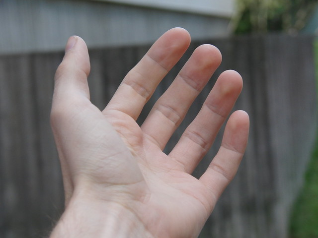

hand
名詞・動詞/hænd/CEFR A1頻度#197NGSLターゲット中学1800 #333英検3級 #387
- 【名詞】腕の先端にある体の部分で5本の指がある。物をつかんだり動かしたりするのに使う（the part at the end of your arm with five fingers）
- 【名詞】時計やゲージの針（the pointer on a clock or gauge showing time or level）
- 【動詞】人に何かを手で渡す、配る（give or pass something to someone with your hand）
⛏️ マインクラフト例文
⛏I need a hand with this mining task.
このマイニングを手伝ってください。
[aɪ ˈniːd ə ˈhænd wɪð ðɪs ˈmaɪnɪŋ ˈtæsk]
- need の語末 /d/ が a の弱形 /ə/ に連結→[ˈniːdə]
- a の弱形 /ə/ が hand /h/ に連結→[ə ˈhænd]
アイ ニード ア ハンド ウィズ ディス マイニング タスク
⛏I'm handing you a diamond ore.
ダイヤ鉱石をあげます。
[aɪm ˈhændɪŋ juː ə ˈdaɪmənd ɔr]
- a の弱形 /ə/ が diamond /d/ に連結→[ə ˈdaɪmənd]
アイム ハンディング ユー ア ダイマンド オア
⛏You need to hand over the redstone to me.
レッドストーンを譲ってください。
[juː ˈniːd tə ˈhænd ˈoʊvə ðə ˈrɛdˌstoʊn tə mi]
- need の語末 /d/ が to の弱形 /ə/ に連結→[ˈniːdə]
- hand の語末 /d/ が over /ˈoʊ/ に連結→[ˈhændˈoʊvə]
ユー ニード タ ハンド オーバー ザ レッドストウン タ ミー
🔤 活用形・複数形
💬 よく使う熟語（マイクラ例文）
lend a hand助ける、手伝う
⛏Can you lend a hand with the redstone circuit?
レッドストーン回路を手伝ってくれませんか？
[kæn juː ˈlɛnd ə ˈhænd wɪð ðə ˈrɛdˌstoʊn ˈsɜrkət]
- lend の語末 /d/ が a の弱形 /ə/ に連結→[ˈlɛndə]
- a の弱形 /ə/ が hand /h/ に連結→[ə ˈhænd]
キャン ユー レンダ ハンド ウィズ ザ レッドストウン サーキット
🔗 この熟語の個別ページ（熟語帳）
hand over譲る、引き渡す英検準2級 #452英検2級 #270
⛏Hand over your diamonds now!
ダイヤモンドを引き渡しなさい！
[ˈhænd ˈoʊvə jɔr ˈdaɪmənz naʊ]
- hand の語末 /d/ が over /ˈoʊ/ に連結→[ˈhændˈoʊvə]
ハンド オーバー ユアー ダイモンズ ナウ
🔗 この熟語の個別ページ（熟語帳）
at hand手元に、すぐそばに
⛏I have a pickaxe at hand.
つるはしが手元にあります。
[aɪ ˈhæv ə ˌpɪkˈæks æt ˈhænd]
- have の語末 /v/ が a の弱形 /ə/ に連結→[ˈhæv ə]
- a の弱形 /ə/ が pickaxe /p/ に連結→[ə ˌpɪkˈæks]
アイ ハブ ア ピカックス アッ ハンド
🔗 この熟語の個別ページ（熟語帳）
hand in提出するターゲット1200 #557英検準2級 #451英検2級 #2206
⛏Hand in all your mined diamonds to the admin today.
本日中に、採掘したダイヤモンドをすべて管理者に提出してください。
[hænd ɪn ɔl jɚ maɪnd ˈdaɪmənz tə ðə ˈædmɪn təˈdeɪ]
- hand の語末子音 /d/ が in の母音 /ɪ/ に連結し [hændɪn] ハンディン
- in の語末子音 /n/ が all の母音 /ɔ/ に連結し [ɪnɔl] イノール
- to と the は弱形で連続し [tə ðə] タ ザ
ハンディン イノール ユア マインド ダイマンズ タ ザ アドミン トゥデイ
🔗 この熟語の個別ページ（熟語帳）
on the other hand一方ではターゲット400 #389ターゲット1000 #160英検3級 #881英検準2級 #1241英検2級 #76
⛏On the other hand, you need to find a good location for your mine.
一方では、採掘に適した良い場所を探す必要があります。
/ɑn ðə ˈʌðər hænd juː niːd tə ˈfaɪnd ə ˈɡʊd loʊˈkeɪʃən fɔːr jɔːr ˈmaɪn/
- find a → find の語末 /d/ が a の初頭母音 /ə/ に連結 [ˈfaɪndə] ファインダ
- good location → good の語末 /d/ が未開放で location の /l/ に連接 [ˈɡʊd̚loʊˈkeɪʃən] グッローケイシュン
- the は弱形 /ðə/ ザ、to は弱形 /tə/ タ
アン ザ アザー ハンド ユー ニード タ ファインダ グッローケイシュン フォー ヨー マイン
🔗 この熟語の個別ページ（熟語帳）
hand in 〜~を提出するターゲット400 #340
⛏You must hand in your completed build by Friday to claim the reward.
報酬を獲得するには、金曜日までに完成したビルドを提出する必要があります。
/ju məst ˈhænd ɪn jɔr kəmˈpliːtɪd ˈbɪld baɪ ˈfraɪˌdeɪ tə ˈkleɪm ðə rɪˈwɔrd/
- hand in → hand の語末子音 /d/ が in の初頭母音 /ɪ/ に連結 [ˈhændɪn] ハンディン
- to → 機能語で弱形 /tə/ タ
- the → 弱形 /ðə/ ザ
ユー マスト ハンディン ユアー コンプリーティッド ビルド バイ フライデイ タ クレイム ザ リウォード
🔗 この熟語の個別ページ（熟語帳）
hand over ～～を引き渡す、～を手渡すターゲット1000 #309
⛏You must hand over your diamonds to the faction leader before you leave.
出発する前に、ファクションのリーダーにダイヤモンドを引き渡す必要があります。
/juː mʌst ˈhænd ˈoʊvər jɔr ˈdaɪəməndz tə ðə ˈfækʃən ˈliːdər bɪˈfɔr ju ˈliːv/
- hand over: 語末子音 /d/ と語頭母音 /oʊ/ が連結し [ˈhændoʊvər] と発音される
ユー マスト ハンドウバー ユアー ダイモンズ タ ザ ファクション リーダー ビフォア ユー リーブ
🔗 この熟語の個別ページ（熟語帳）
hand down ～～を(子孫や後世に)伝える、受け継ぐターゲット1000 #463
⛏Expert miners hand down efficient mining techniques to all new players.
熟練マイナーたちは、効率的な採掘テクニックをすべての新しいプレイヤーたちに伝えている。
[ˈɛkspɚt ˈmaɪnɚz hænd daʊn ɪˈfɪʃənt ˈmaɪnɪŋ tɛkˈniːks tə ɔl njuː ˈpleɪɚz]
- 「down efficient」：語末子音 /n/ が次の母音 /ɪ/ に連結して滑らかに流れる [daʊn ɪˈfɪʃənt] ダウン イフィシェント
- 「to」：機能語で弱形 /tə/ に弱化される。文の自然なリズム形成に寄与
エクスパート マイナーズ ハンド ダウン イフィシェント マイニング テクニークス タ オール ニュー プレイヤーズ
🔗 この熟語の個別ページ（熟語帳）
close/near at handすぐ近くにターゲット1000 #355
⛏The crafting table is close at hand in your base.
あなたのベースではクラフティングテーブルがすぐ近くにあります。
[ðə ˈkræfɾɪŋ ˈteɪbəl ɪz ˈkloʊs æt ˈhænd ɪn jɚ ˈbeɪs]
- 「the」→ 機能語なので弱形 /ðə/ に弱化 [ðə] ザ
- 「crafting」→ /t/ が母音に挟まれてフラップ化 [ˈkræfɾɪŋ] クラフリング
- 「close at」→ close の語末子音 /s/ が at の初頭母音 /æ/ に連結 [ˈkloʊsæt] クロウサット
- 「hand in」→ hand の語末子音 /d/ が in の初頭母音 /ɪ/ に連結 [ˈhændɪn] ハンディン
ザ クラフリング テイバル イズ クロウサット ハンディン ユアー ベイス
🔗 この熟語の個別ページ（熟語帳）
shake hands握手するターゲット1000 #527
⛏The miners all shook hands eagerly after the dragon battle ended.
ドラゴン戦が終わった後、鉱夫たちはみんな熱心に握手した。
/ðə ˈmaɪnɚz ɔːl ʃʊk hændz ˈɛɡɚli ˈæftɚ ðə ˈdɹæɡən ˈbætəl ˈɛndɪd/
- 「miners all」- "miners" /ˈmaɪnɚz/ の語末子音 /z/ が "all" /ɔːl/ の語頭母音 /ɔː/ に連結 [ˈmaɪnɚ zɔːl] マイナーゾール
- 「hands eagerly」- "hands" /hændz/ の語末子音 /z/ が "eagerly" /ˈɛɡɚli/ の語頭母音 /ɛ/ に連結 [ˈhændz ˈɛɡɚli] ハンズエガーリー
- 「battle ended」- "battle" /ˈbætəl/ の語末子音 /l/ が "ended" /ˈɛndɪd/ の語頭母音 /ɛ/ に連結 [ˈbætə lˈɛndɪd] バトルエンディド
ザ マイナーゾール シュック ハンズエガーリー アフター ザ ドラゴン バトルエンディド
🔗 この熟語の個別ページ（熟語帳）
change hands持ち主が変わるターゲット1000 #528
⛏The precious enchanted sword changed hands after we made a deal.
取引をまとめた後、その魔法の貴重な剣の持ち主が変わった。
/ðə ˈprɛʃəs ɪnˈtʃæntɪd sɔrd ˈtʃeɪnd̚ ˈhændz ˈæfɾɚ wi meɪd ə ˈdil/
- 「the precious」→ the の弱形 /ðə/（子音前）[ðə ˈprɛʃəs] ザ プレシャス
- 「made a」→ made の語末子音 /d/ が a の初頭母音 /ə/ に連結 [ˈmeɪdə] メイダ
ザ プレシャス インチャンティド ソード チェインド ハンズ アフラー ウィ メイダ ディール
🔗 この熟語の個別ページ（熟語帳）
hand in ～～を提出するターゲット1000 #190
⛏You must hand in your completed build by Friday to claim the reward.
報酬を獲得するには、金曜日までに完成したビルドを提出する必要があります。
/juː məst ˈhænd ɪn jɔr kəmˈpliːtɪd ˈbɪld baɪ ˈfraɪˌdeɪ tə ˈkleɪm ðə rɪˈwɔrd/
- hand in → hand の語末子音 /d/ が in の初頭母音 /ɪ/ に連結 [ˈhændɪn] ハンディン
- to → 機能語で弱形 /tə/ タ
- the → 弱形 /ðə/ ザ
ユー マスト ハンディン ユアー コンプリーティッド ビルド バイ フライデイ タ クレイム ザ リワード
🔗 この熟語の個別ページ（熟語帳）
by hand手でターゲット1000 #136
⛏You can break stone by hand easily in Minecraft.
マインクラフトでは石を手で簡単に壊すことができます。
[juː kən breɪk stoʊn baɪ hænd ˈɪzɪli ɪn ˈmaɪnkræft]
- can は機能語で弱形 /kən/
- hand easily: hand の語末子音 /d/ が easily の母音 /ɪ/ に連結 [hæn ˈdɪzɪli] ハンディジリ
ユー カン ブレイク ストーン バイ ハンディジリ イン マインクラフト
🔗 この熟語の個別ページ（熟語帳）
give ～ a hand～に手を貸す、～を手伝うターゲット1000 #782
⛏Can you give me a hand building this wall?
この壁を建てるのを手伝ってくれませんか？
[kən juː ɡɪv mi ə hænd̚ ˈbɪldɪŋ ðɪs wɔːl]
- give me — give の語末子音 /v/ と me の初頭子音 /m/ が隣接 [ɡɪv mi] ギヴ ミ
- a hand — a は弱形 /ə/、hand の語頭 /h/ に続く [ə hænd̚] ア ハンド
- this wall — this の語末子音 /s/ が wall の初頭子音 /w/ に先行 [ðɪs wɔːl] ディス ウォール
カン ユー ギヴ ミ ア ハンド ビルディング ディス ウォール
🔗 この熟語の個別ページ（熟語帳）
out of hand手に負えないターゲット1000 #950英検準2級 #498英検2級 #316
⛏Mining got out of hand when I hit the lava.
溶岩に当たったとき、採掘作業が手に負えなくなった。
/ˈmaɪnɪŋ ɡɑɾaʊɾəv hænd wɛn aɪ hɪt ðə ˈlɑvə/
- out of: 語末の /t/ が弱形 of の /ə/ に先行するためフラップ化: [aʊɾəv]、of は弱形 /əv/
- got out: got の /t/ が out の /aʊ/ に先行するためフラップ化: [ɡɑɾaʊ]
- the: 機能語で弱形 /ðə/
マイニング ガラアウラヴハンド ウェン アイ ヒッ ザ ラバ
🔗 この熟語の個別ページ（熟語帳）
(at) first hand直接に、じかにターゲット1000 #975
⛏I learned about mining efficiency at first hand by digging with different tools.
異なるツールで掘ることで、採掘効率について直接に学んだ。
[aɪ ˈlɜːrnd əˈbaʊt ˈmaɪnɪŋ ɪˈfɪʃənsi æt ˈfɜːrst ˈhænd baɪ ˈdɪɡɪŋ wɪð ˈdɪfɚənt ˈtuːlz]
- learned about → 語末子音 /d/ が母音 /ə/ に連結 [ˈlɜːrnd əˈbaʊt] ラーンダバウト
アイ ラーンダバウト マイニング イフィシエンシー アット ファースト ハンド バイ ディギング ウィズ ディファレント トゥールズ
🔗 この熟語の個別ページ（熟語帳）
Please hand in your report.レポートを提出する英検3級 #185
⛏Please hand in your report at the base camp.
基地キャンプでレポートを提出してください。
[pliːz ˈhændɪn jɔɹ rɪˈpɔɹɾæt ðə ˈbeɪs kæmp]
- hand in — 語末子音 /d/ が母音 /ɪ/ に連結 [ˈhændɪn] ハンディン
- report at — 語末子音 /t/ は母音前でフラップ [ɾ]、次の母音 /æ/ に連結 [rɪˈpɔɹɾæt] リポーラット
- the base — 「the」は弱形 /ðə/ で発音 [ðə ˈbeɪs] ザ・ベース
プリーズ・ハンディン・ユア・リポーラット・ザ・ベース・キャンプ
🔗 この熟語の個別ページ（熟語帳）
hand out配る英検3級 #964英検準2級 #266英検2級 #84
⛏The builder will hand out materials to each player.
ビルダーは各プレイヤーに資材を配ります。
[ðə ˈbɪldɚ wɪl ˌhænd ˈaʊt məˈtɛɹiəlz tə ˈiːtʃ ˈpleɪɚ]
- hand out で、hand の語末子音 /d/ が out の初頭母音 /aʊ/ に連結: [hændaʊt] ハンダウト
- to は機能語として弱形 /tə/ に弱化: [tə] タ
ザ ビルダー ウィル ハンダウト マテリアルズ タ イーチ プレイアー
🔗 この熟語の個別ページ（熟語帳）
get hands on手に入れる、入手する英検準2級 #252英検2級 #70
⛏I got hands on some diamonds.
ダイヤモンドを手に入れた。
aɪ ɡɑt ˈhændz ɑn səm ˈdaɪmənz
- got hands → got /ɡɑt/ の語末子音 /t/ が未開放で次の /h/ に連結しない [ɡɑt̚ ˈhændz]「ゴッ ハンズ」
- some → 機能語的に弱形 /səm/ で発音 [səm]「サム」
アイ ゴッ ハンズ オン サム ダイモンズ
🔗 この熟語の個別ページ（熟語帳）
at first handじかに、直接に英検準2級 #391英検2級 #209
⛏I learned about Redstone mechanics at first hand by experimenting with it.
実験することでレッドストーンの仕組みをじかに学んだ。
[aɪ ˈlɝnd əˈbaʊt ˈrɛdstoʊn mɪˈkænɪks æt ˈfɝst hænd baɪ ɪkˈspɛrəmɛnɾɪŋ wɪð ɪt]
- learned about → learned の語末 /d/ が about の弱形 /ə/ に連結 [ˈlɝndə]「ラーンダ」
- at first → /t/ は /f/ の前で無開放。語末 /t/ が未開放のまま [æt̚]「アッ」
- experimenting with → /t/ が母音に挟まれフラップ化 [ˌmɛnɾɪŋ ˈwɪð]「メンリング ウィズ」
- with it → 語末の /ð/ が次の /ɪ/ に連結 [wɪðɪt]「ウィディット」
アイ・ラーンダバウト・レッドストーン・ミカニクス・アッ・ファースト・ハンド・バイ・イクスペアメンリング・ウィディット
🔗 この熟語の個別ページ（熟語帳）
hand off渡す、手渡す英検準1級 #2386
⛏I need to hand off my Netherite pickaxe to you before I jump into the lava.
溶岩に飛び込む前に、ネザライトのつるはしを君に渡す必要がある。
[aɪ ˈniːd̚ tə ˈhænd‿ˈɔf maɪ ˈnɛðəraɪt ˈpɪkæks̚ tə juː bɪˈfoɹ‿aɪ ˈdʒʌmp ˈɪntuː ðə ˈlɑvə]
- need to → 語末子音 /d/ が子音 /t/ に未開放で先立つ [ˈniːd̚ tə]→「ニード タ」
- hand off → 語末子音 /d/ が母音 /ɔ/ に連結 [ˈhænd‿ˈɔf]→「ハンドオフ」
- pickaxe to → 語末子音 /s/ が子音 /t/ に未開放で先立つ [ˈpɪkæks̚ tə]→「ピッカックス タ」
- before I → 語末子音 /r/ が母音 /aɪ/ に連結 [bɪˈfoɹ‿aɪ]→「ビフォーアイ」
アイ ニード タ ハンドオフ マイ ネザライト ピッカックス タ ユー ビフォーアイ ジャンプ イントゥー ザ ラヴァ
🔗 この熟語の個別ページ（熟語帳）
from hand to mouthその日暮らしで、先のことを考えずに英検準1級 #428
⛏She's living from hand to mouth, struggling each day without supplies for advancement.
彼女はその日暮らしをしており、毎日の装備がないまま戦い、次に進むための資源がない。
[ʃiz‿ˈlɪvɪŋ̚ frəm̚ ˈhænd̚ tə ˈmaʊθ ˈstrʌɡəlɪŋ̚ itʃ deɪ wɪðˈaʊt̚ səˈplaɪz fɔɹ‿ ədˈvænsmənt]
- from hand → 語末子音 /m/ が子音 /h/ に未開放で先立つ [frəm̚ ˈhænd]→「フラム ハンド」
- hand to → 語末子音 /d/ が弱形 /tə/ に未開放で先立つ [ˈhænd̚ tə]→「ハンド タ」
- for advancement → 語末子音 /r/ が母音 /ə/ に連結 [fɔɹ‿ ədˈvænsmənt]→「ファー アドヴァンスメント」
シーズ リビング フラム ハンド タ マウス ストラグリング イッチ デイ ウィザウト サプライズ ファー アドヴァンスメント
🔗 この熟語の個別ページ（熟語帳）